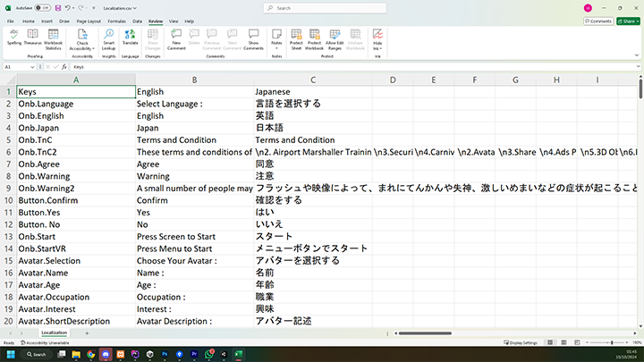

Unity Developer | Multiplayer | AR & VR
SpaceCollab Demo is a demonstration version of the SpaceCollab application, which is an interactive, 3D-based virtual meeting platform. The demo serves to showcase the various potentials and capabilities of the full SpaceCollab experience, allowing users to explore the features and interactive elements that make virtual meetings more engaging and immersive.
Currently, SpaceCollab Demo is available exclusively on the Meta platform, and I was entrusted by my company to manage and publish this application on the Meta Store. In this project, my primary contributions were the development of the localization system and screen sharing functionality.
The localization system I implemented allows for effortless language customization, enabling translations to be easily created using spreadsheet editors like Microsoft Excel. This approach empowers translators with little to no IT background to seamlessly contribute their language skills, simplifying the localization process and making the app accessible to a broader audience.
For screen sharing, I integrated the Agora SDK, which facilitates effective sharing of screens during online meetings—perfect for scenarios such as business presentations and collaborative discussions. This feature enhances the application’s value for virtual meetings by providing real-time visual sharing, which is critical in professional settings. Overall, Space Collab Demo offers a glimpse into a versatile and forward-thinking virtual meeting solution.